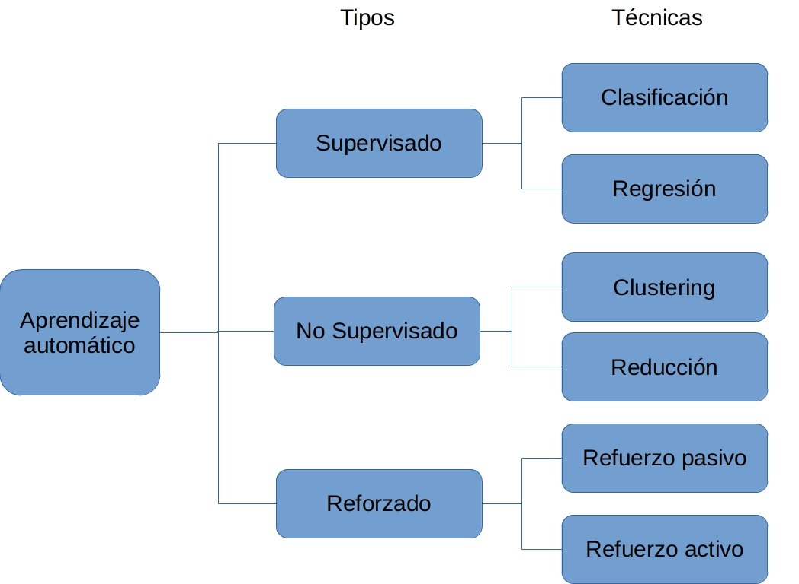

\(\newcommand{\V}{{\cal V}}\) \(\newcommand{\C}{{\mathbb C}}\) \(\newcommand{\R}{{\mathbb R}}\) \(\newcommand{\tr}{{\rm tr}}\) \(\newcommand{\ketbra}[2]{{|#1\rangle\langle #2|}}\) \(\newcommand{\braket}[2]{{\langle #1|#2\rangle}}\) \(\newcommand{\ket}[1]{{|#1\rangle}}\) \(\newcommand{\braa}[1]{{\langle #1|}}\) \(\newcommand{\Hil}{{\mathcal H}}\) \(\newcommand{\Lin}{\rm L}\) \(\newcommand{\O}{{\mathcal O}}\) \(\newcommand{\ees}{\end{equation*}}\) \(\newcommand{\bes}{\begin{equation*}}\) \(\newcommand{\i}{{\color{blue} i}}\)

QML (Quantum Machine Learning)#
Este notebook recoge los conceptos básicos para adentrarse en el mundo del QML (Quantum Machine Learning). En primer lugar, se contextualizan los campos en los que se apoya y se explica en qué se basa el QML. Posteriormente, se recogen diferentes conceptos y definiciones que facilitarán la comprensión de los distintos cuadernos teórico-prácticos disponibles.
Para los ejemplos prácticos se han utilizado los siguientes frameworks:
Qibo: Qibo es una API full stack de código abierto para simulaciones y control de hardware cuántico. El objetivo de Qibo es contribuir mediante su simplicidad, flexibilidad de ejecución, su comunidad de desarrolladores y una detallada documentación, así como una amplia gama de aplicaciones, modelos cuánticos y algoritmos. La versión usada en este notebook es 0.1.12 [19].
Pennylane: un framework para programación cuántica similar a los utilizados en la computación clásica, Tensorflow o PyTorch. PennyLane está desarrollado en base a la idea de entrenar circuitos cuánticos utilizando la diferenciación automática. Esto es especialmente importante en aplicaciones como el aprendizaje automático cuántico, la química cuántica y la optimización cuántica [18].
Las imágenes han sido generadas usando Qiskit, todo el código de Qiskit está comentado; Qibo aún no tiene librerías de visualización.
1.1. Machine Learning#
El Machine Learning (ML) o Aprendizaje Automático es uno de los campos más destacados de la Inteligencia Artificial en la actualidad. Se refiere al proceso de construcción de algoritmos que pueden aprender de las observaciones existentes (o conjuntos de datos o datasets) y aprovechar ese aprendizaje para predecir nuevas observaciones o determinar el resultado de nuevas entradas. [1]
Existen cuatro tipos de aprendizaje automático que se clasifican en función de la disponibilidad de las salidas de los ejemplos, es decir, dependerá de si se conoce el valor esperado para cada instancia del problema o no. La Imagen 1 recoge de forma esquemática dicha clasificación.
El primer tipo corresponde al aprendizaje supervisado. En este caso se conoce la salida de todas las instancias del problema, es decir, el conjunto de datos con el que se trabaja tiene registrados los valores a predecir de todos los ejemplos disponibles. Por lo tanto, se le podrá mostrar al algoritmo toda la información necesaria para elaborar su solución. [1]
En el aprendizaje no supervisado sin embargo, los valores de la variable salida son desconocidos, por lo que se utilizan otro tipo de algoritmos para descubrir la estructura de los datos. Se intentan agrupar dichos ejemplos en distintos grupos con características en común. [1]
El aprendizaje semi supervisado es una mezcla de los dos anteriores, en este caso se conoce la salida únicamente para algunos de los ejemplos, en la mayoría de ellos no se disponen de estos valores. Este tipo de aprendizaje está presente en los casos en los que el coste de conocer el valor para la variable salida es muy grande pero el obtener los datos sin esta información conlleva un coste muy bajo. [1]
Por último, el aprendizaje por refuerzo se trata de un tipo distinto a los comentados anteriormente. Son algoritmos que aprenden por si mismos mediante recompensas. No se dispone del valor de salida por lo que no se encuentra dentro del aprendizaje supervisado, pero tampoco se trata de intentar obtener grupos con características comunes por lo que tampoco forma parte del no supervisado. [1]
También es interesante conocer que, dentro del aprendizaje supervisado, los problemas se pueden catalogar como problemas de regresión o clasificación. En los problemas de regresión, el resultado a predecir será un valor numérico y en los problemas de clasificación se pretende predecir una clase, entendiendo por “clase” a una de las categorías arbitrarias según nuestro problema.
{kind=link}
1.2. Quantum Machine Learning#
La tecnología cuántica ha supuesto un cambio de paradigma en el campo de la computación. Apoyándose en las leyes de la mecánica cuántica resuelve de manera más eficaz algunos problemas complejos que no pueden ser resueltos por los ordenadores tradicionales. Surge el Quantum Machine Learning (QML), un campo en evolución. El aprendizaje automático cuántico es la integración de algoritmos cuánticos en programas de aprendizaje automático como vemos en la siguiente imagen. [3]

Se puede combinar la computación cuántica con el aprendizaje automático de diversas maneras, obteniendo cuatro áreas de trabajo. Estas corresponden a las que se muestran en la Imagen 3:

CC: Se refiere a procesar datos clásicos con ordenadores clásicos, haciendo uso de algoritmos inspirados en computación cuántica. En otras palabras, hace referencia al machine learning clásico que directamente no tiene una base de quantum, si no que toma prestadas ideas de la física cuántica. [3]
CQ: En este caso, se procesan datos clásicos utilizando algoritmos de quantum machine learning. Será con la tipología que trabajaremos a partir de ahora. En este área se pretende encontrar soluciones más eficaces para problemas típicamente solucionados con ML pero sobre ordenadores cuánticos. [3]
QC: Se trata de un área de investigación, utilizan algoritmos clásicos para tratar datos cuánticos. [3]
QQ: Se podría decir que esta sería la aproximación más “pura”, ya que se realiza un procesamiento de los datos cuánticos y estos datos cuánticos se procesan haciendo uso del aprendizaje automático cuántico. [3]
1.2.1. Fases del QML#

En líneas generales, el flujo de procesamiento en QML viene reflejado en la imagen 4. En primer lugar, los datos de entrada se preprocesan en un dispositivo clásico para determinar el estado cuántico de entrada. A continuación, el hardware cuántico prepara un estado cuántico |x⟩ y calcula \(U(\mathbf{x},\mathbf{\theta})\) con parámetros \(\theta\) inicializados aleatoriamente. Tras múltiples ejecuciones de \(U(\mathbf{x},\mathbf{\theta})\), el componente clásico postprocesa las mediciones y genera una predicción \(f(\mathbf{x}, \mathbf{\theta})\). Por último, se actualizan los parámetros y todo el ciclo se ejecuta varias veces en un bucle cerrado entre el hardware clásico y el cuántico [6].
1.2.2. Conceptos#
Qubit (Quantum bit, en castellano cúbit): Es la unidad básica de la información cuántica. Es análogo al conocido bit clásico. Un cúbit general será de la forma \(\ket{u} = a\ket{0} + b\ket{1}\) donde \(a\) y \(b\) son dos números complejos, es decir cuatro números reales.
Superposición: Concepto de la computación cuántica por el que un cúbit es una combinación lineal de dos estados, |0⟩ y |1⟩, hasta que se mide. Mientras que un bit, o dígito binario, puede tener el valor 0 o 1, un cúbit puede tener un valor que sea 0, 1 o una superposición cuántica de 0 y 1. A diferencia de las partículas clásicas, si dos estados \(A\) y \(B\) son estados cuánticos válidos de una partícula cuántica, cualquier combinación lineal de los estados también es un estado cuántico válido: \(qubitState = αA + βB\). Esta combinación lineal de estados cuánticos \(A\) y \(B\) se denomina superposición. Aquí, \(α\) y \(β\) son las amplitudes de probabilidad de \(A\) y \(B\), respectivamente, de modo que \(|α|^2+|β|^2=1\) [7].
Entrelazamiento: Las partículas cuánticas, como los cúbits, pueden estar conectadas o entrelazadas de tal forma que no pueden describirse independientemente unas de otras. Los resultados de sus mediciones están correlacionados aunque estén separados a una distancia infinita. El entrelazamiento es esencial para medir el estado de un cúbit [7].
Puertas (Gates): Por puertas simples se entiende un conjunto de operadores unitarios (un operador unitario cumple \(U^{-1} = U^{\dagger}\)) que se utilizan con frecuencia en la computación cuántica y actúan sobre un qubit. Como en el caso de un solo cúbit, cualquier transformación unitaria es una operación válida en los cúbits. En general, una transformación unitaria en n cúbits es una matriz \(U\) de tamaño \(2^n×2^n\). [8].
Kernel: El QML puede utilizarse para realizar la evaluación del kernel introduciendo estimaciones de un ordenador cuántico en el método estándar. Aunque el entrenamiento y la inferencia del modelo tendrán que hacerse en la SVM (Support-Vector Machine) estándar, el uso de QSVM (Quantum SVM) podría ayudar a acelerar el proceso. A medida que se amplía el espacio de características, la estimación de las funciones kernel en la computación clásica resulta costosa desde el punto de vista computacional. Las propiedades cuánticas ayudan a crear un espacio de estado cuántico masivo que puede mejorar la evaluación de los kernels [9].
PCA (Principal Component Analysis): Es una técnica de extracción de características donde se combinan las entradas de una manera específica y se pueden eliminar algunas de las variables “menos importantes” manteniendo la parte más importante todas las variables. Como valor añadido, tras aplicar técnicas de PCA se obtienen variables independientes entre sí [10].
Función de coste: Trata de definir el error entre el valor estimado y el valor real con el fin de optimizar el algoritmo. En otras palabras, la función de coste cuantifica el error que se ha cometido al predecir los valores deseados.
Optimización: Los problemas de optimización están presentes en muchos campos de estudio e implican encontrar las entradas que darán el mejor resultado posible para un problema dado. Por lo general, encontrar el mejor resultado posible equivale a minimizar la función de coste [11]. Los algoritmos de optimización de inspiración cuántica aprovechan algunas de las ventajas de la computación cuántica en hardware clásico, lo que proporciona más velocidad que en los enfoques tradicionales. Los algoritmos de inspiración cuántica son algoritmos clásicos en los que se puede emular de forma clásica el fenómeno cuántico esencial que proporcionaría el aumento de velocidad [12].
Gradiente: El gradiente es el conjunto de todas las derivadas parciales de una función. En el caso de machine learning, resulta de interés el gradiente de la función de coste [13].
Medida (Measurement): El paso final en computación cuántica es la medida de uno o más qubits, después de todo se necesita obtener el resultado de lo que se ha estado calculando cuánticamente. Pese a que este último paso puede parecer una última capa del circuito, no se tiene en cuenta a la hora de calcular la profundidad [16]. La definición de la medida es el problema central de la mecánica cuántica y esta estrechamente relacionada con las amplitudes del estado con el que se está trabajando, ya que el resultado obtenido depende de dichas probabilidades [4].
1.2.3. Puertas#
Los circuitos empleados en QML se basan en el uso de puertas lógicas. Entre las puertas que se deben tener en cuenta están las puertas de un cúbit, como la puerta de Hadamard (\(H\)) o las puertas de rotación, y las puertas de entrelazamiento como CNOT (NOT controlado) o CZ (Z controlada).
A continuación, se muestra la representación matricial de las puertas nombradas.
Puerta de Hadamard (\(H\)): La puerta de Hadamard (puerta H) es una puerta cuántica fundamental. Nos permite alejarnos de los polos de la esfera de Bloch y crear superposición entre |0⟩ y |1⟩ [15]. Su matriz es:
# import numpy as np
# from qiskit.visualization import array_to_latex
# # Se define H gate
# H = 1/np.sqrt(2) * np.matrix([[1,1],[1,-1]])
# H_latex = array_to_latex(H, prefix="{H =}", source=True)
from IPython.display import Latex
H_latex = '{H =}\n\n\\begin{bmatrix}\n\\frac{\\sqrt{2}}{2} & \\frac{\\sqrt{2}}{2} \\\\\n \\frac{\\sqrt{2}}{2} & - \\frac{\\sqrt{2}}{2} \\\\\n \\end{bmatrix}\n'
Latex(f"$${H_latex}$$")
# from qiskit import QuantumCircuit, assemble, Aer
# from qiskit.providers.aer.library import save_statevector
# from qiskit.visualization.state_visualization import plot_bloch_multivector
# # Se define el circuito de 1 qubit en este caso y le aplicamos H
# qc = QuantumCircuit(1)
# qc.h(0)
# # Se visualiza el circuito
# qc.draw(output="mpl", filename="qc_hadamard.jpg")
# # Se obtienen los resultados
# qc.save_statevector()
# qobj = assemble(qc)
# sim = Aer.get_backend('aer_simulator')
# result = sim.run(qobj).result()
# final_state = result.get_statevector()
# # Se visualiza en la esfera de Bloch
# plot_bloch = plot_bloch_multivector(final_state)
# plot_bloch.savefig('bloch_hadamard.jpg')


Esfera de Bloch para la aplicación de Hadamard
# from qiskit import execute
# qc = QuantumCircuit(1)
# qc.h(0)
# simulator = Aer.get_backend('unitary_simulator')
# result = execute(qc, simulator).result()
# # Se puede visualizar la matriz que representa el estado
# matrix = result.get_unitary(qc)
# display(matrix)
Puertas de rotación: En lo que se refiere a rotaciones en torno a los ejes 𝑋 , 𝑌 y 𝑍 de un ángulo \(\theta\) se trabaja con las siguientes las tres puertas:
# theta = np.random.uniform(0,2*np.pi)
# R_x = 1j*np.matrix([[np.cos(theta/2),-1j*np.sin(theta/2)],[-1j*np.sin(theta/2),np.cos(theta/2)]])
# Rx_latex = array_to_latex(R_x, prefix="R_{x} = ", source=True)
Rx_latex = 'R_{x} = \n\\begin{bmatrix}\n0.6880838323 i & 0.7256312009 \\\\\n 0.7256312009 & 0.6880838323 i \\\\\n \\end{bmatrix}\n'
Latex(f"$${Rx_latex}$$")
# theta = np.random.uniform(0,2*np.pi)
# R_y = 1j*np.matrix([[np.cos(theta/2),-1*np.sin(theta/2)],[np.sin(theta/2),np.cos(theta/2)]])
# Ry_latex = array_to_latex(R_y, prefix="R_{y} = ", source=True)
Ry_latex = 'R_{y} = \n\\begin{bmatrix}\n- 0.23586718 i & - 0.9717853021 i \\\\\n 0.9717853021 i & - 0.23586718 i \\\\\n \\end{bmatrix}\n'
Latex(f"$${Ry_latex}$$")
# theta = np.random.uniform(0,2*np.pi)
# R_z = np.matrix([[np.exp((-1j*theta)/2),0],[0,np.exp((1j*theta)/2)]])
# Rz_latex = array_to_latex(R_z, prefix="R_{z} = ", source=True)
Rz_latex = 'R_{z} = \n\\begin{bmatrix}\n0.6991138242 - 0.7150103921 i & 0 \\\\\n 0 & 0.6991138242 + 0.7150103921 i \\\\\n \\end{bmatrix}\n'
Latex(f"$${Rz_latex}$$")
# import numpy as np
# from qiskit import QuantumCircuit, ClassicalRegister, QuantumRegister, transpile
# from qiskit import BasicAer
# backend = BasicAer.get_backend('unitary_simulator')
# q = QuantumRegister(1)
# theta = np.pi/2
# qc = QuantumCircuit(q)
# # Se aplica la puerta Rx
# qc.rx(theta,q)
# qc.draw(output = "mpl", filename="qc_rx.png")
# job = backend.run(transpile(qc, backend))
# job.result().get_unitary(qc, decimals=3)
# #https://qiskit.org/documentation/tutorials/circuits/3_summary_of_quantum_operations.html

# q = QuantumRegister(1)
# theta = np.pi/2
# qc = QuantumCircuit(q)
# # Se aplica la puerta Ry
# qc.ry(theta,q)
# qc.draw(output = "mpl", filename="qc_ry.jpg")
# job = backend.run(transpile(qc, backend))
# job.result().get_unitary(qc, decimals=3)

# q = QuantumRegister(1)
# theta = np.pi/2
# qc = QuantumCircuit(q)
# # Se aplica la puerta Rz
# qc.rz(theta,q)
# qc.draw(output = "mpl", filename="qc_rz.jpg")
# job = backend.run(transpile(qc, backend))
# job.result().get_unitary(qc, decimals=3)

Puertas de entrelazamiento: Las puertas que se muestran a continuación son las encargadas de generar entrelazamiento entre dos cúbits.
A continuación, se recoge un código de ejemplo donde se implementa el operador controlado CNOT y la matriz asociada para un circuito de 2 qubits donde el segundo es el qubit de control sobre el primero:
# from qiskit import QuantumCircuit, Aer, execute
# qc = QuantumCircuit(2)
# qc.cx(1, 0)
# qc.draw(output = "mpl", filename="qc_cx.jpg")
# simulator = Aer.get_backend('unitary_simulator')
# result = execute(qc, simulator).result()
# matrix = result.get_unitary(qc)
# cnot_latex = array_to_latex(matrix, prefix = "CNOT_{21} = ", source=True)
cnot_latex = 'CNOT_{21} = \n\\begin{bmatrix}\n1 & 0 & 0 & 0 \\\\\n 0 & 1 & 0 & 0 \\\\\n 0 & 0 & 0 & 1 \\\\\n 0 & 0 & 1 & 0 \\\\\n \\end{bmatrix}\n'
Latex(f"$${cnot_latex}$$")

# qc = QuantumCircuit(2)
# qc.cz(1, 0)
# qc.draw(output = "mpl", filename="qc_cz.jpg")
# simulator = Aer.get_backend('unitary_simulator')
# result = execute(qc, simulator).result()
# matrix = result.get_unitary(qc)
# cz_latex = array_to_latex(matrix, prefix = "CZ_{21} = ", source=True)
cz_latex = 'CZ_{21} = \n\\begin{bmatrix}\n1 & 0 & 0 & 0 \\\\\n 0 & 1 & 0 & 0 \\\\\n 0 & 0 & 1 & 0 \\\\\n 0 & 0 & 0 & -1 \\\\\n \\end{bmatrix}\n'
Latex(f"$${cz_latex}$$")

Referencias#
[1]. https://www.ibm.com/es-es/cloud/learn/machine-learning
[2]. http://astrowizici.st/teaching/phs5000/10
[3]. https://learn.qiskit.org/course/machine-learning/introduction
[4]. https://qm-ware.com/
[5]. https://en.wikipedia.org/wiki/Quantum_machine_learning
[6]. https://link.springer.com/chapter/10.1007/978-3-030-50433-5_45
[7]. https://learn.microsoft.com/es-es/azure/quantum/
[8]. https://learn.microsoft.com/es-es/azure/quantum/concepts-multiple-qubits
[9]. https://www.geeksforgeeks.org/the-ultimate-guide-to-quantum-machine-learning-the-next-big-thing/
[10]. https://www.aprendemachinelearning.com/comprende-principal-component-analysis/
[11]. https://pennylane.ai/blog/2021/10/how-to-start-learning-quantum-machine-learning
[12]. https://learn.microsoft.com/es-es/azure/quantum/optimization-overview-introduction
[13]. https://www.iartificial.net/gradiente-descendiente-para-aprendizaje-automatico/
[14]. https://eprints.lancs.ac.uk/id/eprint/154554/1/QML_survey.pdf
[15]. https://qiskit.org/textbook/ch-states/single-qubit-gates.html#3.-The-Hadamard-Gate–
[16]. https://codebook.xanadu.ai/I.4
[17]. https://qiskit.org/documentation/index.html
[18]. https://pennylane.ai/faq.html
This work has been financially supported by the Ministry of Economic Affairs and Digital Transformation of the Spanish Government through the QUANTUM ENIA project call - Quantum Spain project, and by the European Union through the Recovery, Transformation and Resilience Plan - NextGenerationEU within the framework of the Digital Spain 2025 Agenda.